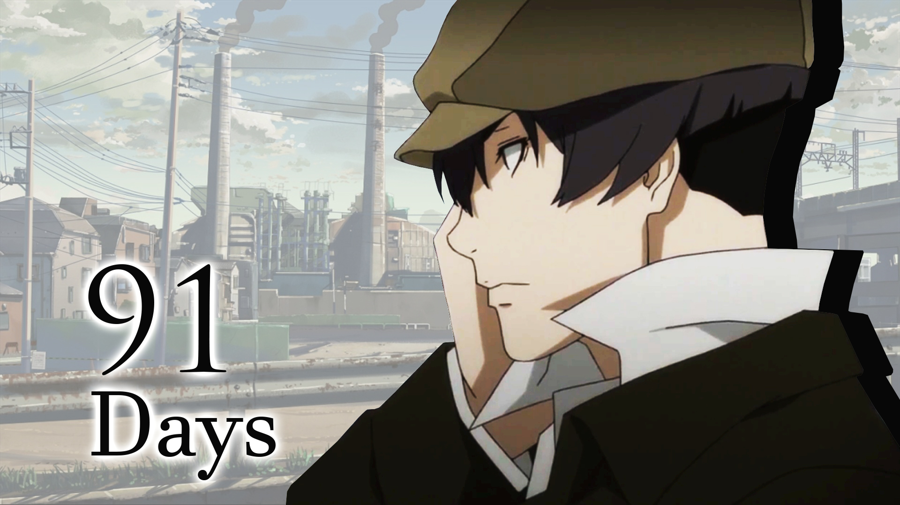
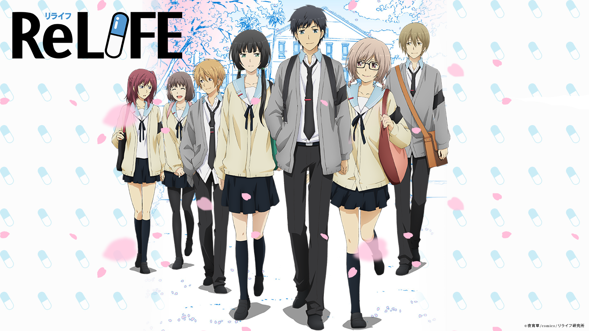

Shokugeki no Souma: Ni no Sara
Ever since he was a child, fifteen-year-old Souma Yukihira has helped his father by working as the sous chef in the restaurant his father runs and owns. Throughout the years, Souma developed a passion for entertaining his customers with his creative, skilled, and daring culinary creations. His dream is to someday own his family's restaurant as its head chef. Yet when his father suddenly decides to close the restaurant to test his cooking abilities in restaurants around the world, he sends Souma to Tootsuki Culinary Academy, an elite cooking school where only 10 percent of the students graduate. The institution is famous for its "Shokugeki" or "food wars," where students face off in intense, high-stakes cooking showdowns. As Souma and his new schoolmates struggle to survive the extreme lifestyle of Tootsuki, more and greater challenges await him, putting his years of learning under his father to the test.
Orange
One day, Naho Takamiya receives a letter written to herself from ten years in the future. As Naho reads on, the letter recites the exact events of the day, including the transfer of a new student into her class named Kakeru Naruse. The Naho from ten years later repeatedly states that she has many regrets, and she wants to fix these by making sure the Naho from the past can make the right decisions—especially regarding Kakeru. What's more shocking is that she discovers that ten years later, Kakeru will no longer be with them. Future Naho asks her to watch over him closely.
91 Days

As a child living in the town of Lawless, Angelo Lagusa has witnessed a tragedy: his parents and younger brother have been mercilessly slaughtered by the Vanetti mafia family. Losing everything he holds dear, he leaves both his name and hometown behind, adopting the new identity of Avilio Bruno. Seven years later, Avilio finally has his chance for revenge when he receives a mysterious letter prompting him to return to Lawless. Obliging, he soon encounters the Vanetti don's son, Nero, and seeks to befriend him using the skills he has quietly honed for years. Set during the Prohibition era, 91 Days tells the story of Avilio's dark, bloodstained path to vengeance, as he slowly ends each of the men involved in the killing of his family.
ReLIFE

Dismissed as a hopeless loser by those around him, 27-year-old Arata Kaizaki bounces around from one job to another after quitting his first company. His unremarkable existence takes a sharp turn when he meets Ryou Yoake, a member of the ReLife Research Institute, who offers Arata the opportunity to change his life for the better with the help of a mysterious pill. Taking it without a second thought, Arata awakens the next day to find that his appearance has reverted to that of a 17-year-old. Arata soon learns that he is now the subject of a unique experiment and must attend high school as a transfer student for one year. Though he initially believes it will be a cinch due to his superior life experience, Arata is proven horribly wrong on his first day: he flunks all his tests, is completely out of shape, and can't keep up with the new school policies that have cropped up in the last 10 years. Furthermore, Ryou has been assigned to observe him, bringing Arata endless annoyance. ReLIFE follows Arata's struggle to adjust to his hectic new lifestyle and avoid repeating his past mistakes, all while slowly discovering more about his fellow classmates.
Mob Psycho 100
Kageyama Shigeo (a.k.a. "Mob") is a 8th grader with psychic abilities. He could bend spoons and lift objects with his mind from a young age, but he slowly began to withhold from using his abilities in public due to the negative attention he kept receiving. Now, the only thing he wants is to become friends with a girl in his class, Tsubomi. With his psychic "mentor" (who has no psychic powers), he continues his daily life, attempting to realize his purpose in life.